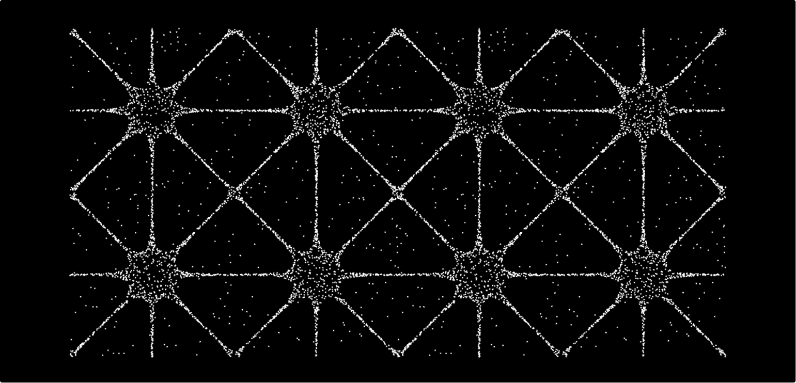
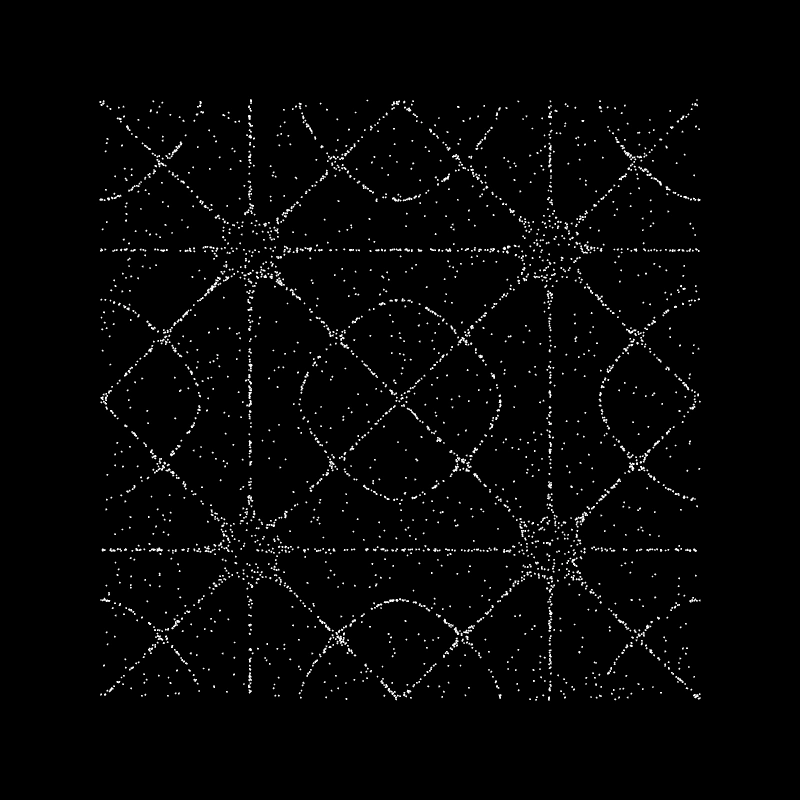
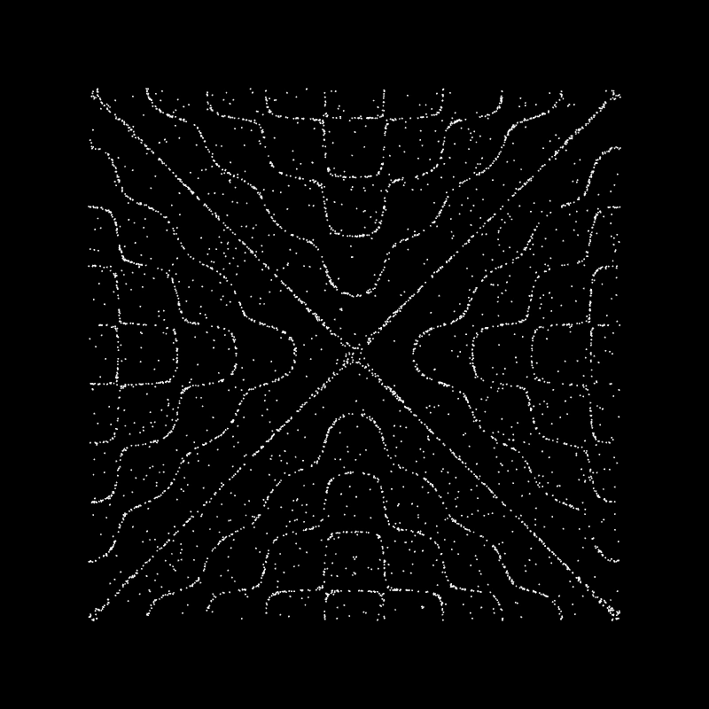
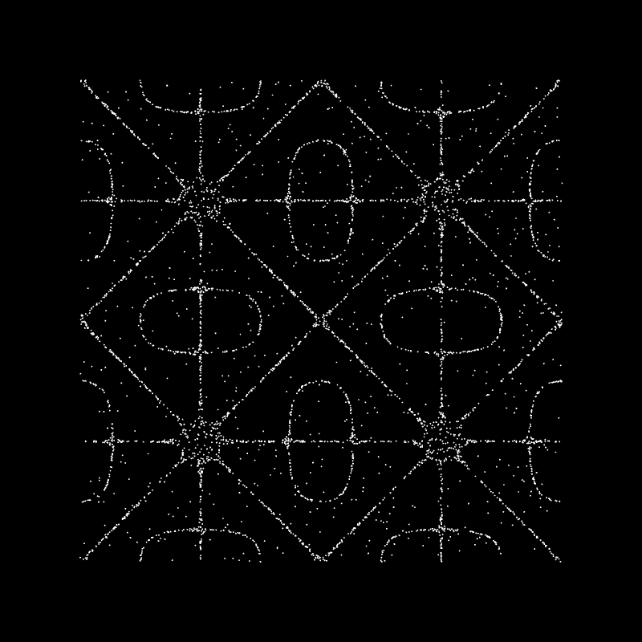

Смотреть видос
Важная инфа
Этот тутор ты можешь повторить в нашей песочнице
Материалы
Проджект файл
Хладни узоров
Тутор
Продолжающим
Код
Смотреть видос
Важная инфа
Этот тутор ты можешь повторить в нашей песочнице
Материалы
Проджект файл
Хладни узоры на p5.js
Узоры Хладни — это геометрические фигуры, возникающие, когда песок или соль оседают на неподвижных участках вибрирующей поверхности. Они формируются благодаря стоячим волнам и зависят от частоты колебаний. Эти узоры были названы в честь Эрнста Хладни, немецкого физика, который впервые исследовал это явление. В этом туторе мы рассмотрим, как с помощью JavaScript и библиотеки p5.js создать цифровую симуляцию узоров Хладни.
Даша Бушенева
16/02/20025
Алгоритм
Шаг 1
Сначала объявляются глобальные переменные. Эти переменные нужны, чтобы разные части кода могли к ним обращаться.
Particles – массив для хранения всех частиц (песчинок)
на пластине. По сути, это список объектов или координат, представляющих каждую песчинку, которая будет двигаться по холсту. Параметры узора Хладни, например n и m – числа, определяющие форму узора. Они соответствуют различным режимам колебаний пластины. Изменяя эти числа, мы получаем разные фигуры (разное количество узлов и петель в узоре). Изначально им могут быть присвоены какие-то стартовые значения по умолчанию.
Возможны вспомогательные переменные, например, numParticles, если мы хотим легко менять, сколько песчинок используется
в симуляции или threshold для определения, сильно или слабо вибрирует точка
Скопируй
let particles = []; let num = 5000;
let m = 5; let n = 4; let threshold = 0.05;
let minMN = 1; let maxMN = 6;
let changePattern = true;
let margin = 50; let w1, w2, h1, h2;
let scl = 1;Здесь мы создали пустой массив particles и задали начальные значения n и m. Мы выбрали случайно 5 и 4
в качестве примера. Переменная numParticles указана
для примера.
Фактически, можно поставить любые подходящие числа или даже заменить их другими параметрами формулы
Шаг 2
Функция setup() запускается первым делом. Ее основная задача — подготовить «сцену» для нашей визуализации.
Скопируй
function setup() {
createCanvas(400 , 400 );
w1 = margin; w2 = width - margin;
h1 = margin; h2 = height - margin;
bgColor = color(39, 39, 39);
particleColor = color(239, 239, 239);
for (let i = 0; i < num; i++) {
particles.push(new Particle());
}
}createCanvas(400, 400) создает область для рисования размером 400 на 400 пикселей. Теперь узор будет ограничены этим холстом.
Могут использоваться windowWidth и windowHeight для полноэкранного режима, либо любые другие размеры
Далее мы вызываем background(0), чтобы закрасить весь холст черным цветом. Это будет начальный фон.
Следующая строка stroke(255) устанавливает цвет обводки (контуров) для фигур на холсте в белый. В p5.js функция stroke() отвечает за цвет линий и точек. Таким образом, когда мы будем рисовать частицы как точки, они будут белыми на черном фоне – как песок на темной пластине.
Далее самая важная часть setup() – цикл, который заполняет массив particles. Здесь мы решаем, сколько частиц (песчинок) будем симулировать, и размещаем их
по случайным позициям на пластине. В примере мы используем for-цикл от 0 до numParticles. На каждой итерации генерируем случайные координаты x и y внутри границ холста с помощью функции random(). random(width) дает случайное число от 0 до значения width,
а random(height) – от 0 до height. Затем мы создаем объект частицы, в простейшем случае это объект с двумя свойствами, x и y, и добавляем этот объект в массив particles.
После выполнения setup() у нас будет создан холст, фон настроен, и в памяти хранится много «песчинок», каждая со своей случайной позицией. Они пока ещё не нарисованы на экране (мы только подготовили данные). Рисоваться и обновляться они будут в функции draw().
Шаг 3
Функция draw() отвечает за анимацию. Каждую итерацию кадра она обновляет состояние системы и выводит результат на экран. Для нашей визуализации узоров Хладни это означает: стирать предыдущий кадр, рассчитывать, куда двинутся частицы (если двинутся), и рисовать их на новых местах.
Скопируй
function draw() {
background(0);
if (changePattern) {
randomPatterns();
}
for (let i=0; i < particles.length; i++) {
particles[i].update();
particles[i].display();
}
}В начале каждого кадра мы вызываем background(0) – это очищение холста, закрашивая его заново черным цветом. Делается это каждый раз, чтобы мы видели только актуальные положения частиц, а старые положения не оставались на экране. Если бы мы не очищали фон, частицы бы оставляли «следы» , и картинка быстро превратилась бы в сплошное пятно. Нам же важно видеть именно узор из частиц, собравшихся
в определенных местах.
Иногда можно не очищать фон, чтобы постепенно «проявлялся» рисунок
Далее идет цикл for через все частицы. Внутри мы сначала вычисляем величину vibration = chladni(p.x, p.y). Здесь мы вызываем нашу специальную функцию chladni(), о ней подробнее чуть ниже, и передаем ей координаты частицы. Эта функция нам возвращает некоторую численную величину, характеризующую, насколько сильно вибрирует пластина в данной точке.
Проще говоря, она говорит нам: находится ли эта точка на вибрирующей части пластины или на неподвижной
(узловой) линии.
Далее с помощью if мы решаем, двигать частицу или нет. Мы берём абсолютное значение abs(vibration) – модуль колебания. Почему модуль? Потому что формула может давать как положительные, так и отрицательные значения, нас интересует именно по модулю величина колебания. Мы сравниваем это значение с некоторым порогом, например 0.1 (в приведённом примере кода). Если abs(vibration) > 0.1, условно считаем, что в этой точке пластина заметно колеблется (анти-узел, где песок не удерживается и будет «стряхиваться»). Слегка сдвинем ее на небольшое случайное расстояние по X и Y. Здесь random(-1, 1) возвращает случайное число от — 1 до 1. То есть мы смещаем частицу на долю пикселя или несколько пикселей в случайном направлении. Этот случайный толчок имитирует вибрацию.
Если же abs(vibration) не превышает порог (то есть вибрация очень слабая, практически узел), if не выполняется и в частицы p координаты не меняются. Иначе говоря, если песчинка попала в область узла (неподвижную линию), мы её оставляем там лежать.
После возможного обновления позиции мы рисуем частицу. В примере выше используется point(p.x, p.y) – рисуем точку в текущих координатах частицы. Благодаря тому, что мы ранее задали stroke(255), эта точка будет белой. Этот цикл повторяется для каждой частицы, так что за один вызов draw() мы вычислим и, при необходимости, подвигаeм все песчинки, а затем нарисуем их новые положения.
Шаг 4
Функция chladni() – сердце всей программы, потому
что именно она задаёт математическую модель узора. Не пугайтесь, если вы никогда не писали код: сейчас объясним идею простыми словами. В физике узоры Хладни описываются уравнением стоячих волн. Обычно это комбинация синусоидальных (волнообразных) колебаний вдоль горизонтали и вертикали. Но нам не обязательно глубоко разбираться в формуле – важно понимать,
что функция chladni(x, y) берет координаты точки x, y
и возвращает число, пропорциональное смещению (или амплитуде колебаний) пластины в этой точке.
Скопируй
function chladni(x, y) {
let term1 = sin(PI * n * x / width) * sin(PI * m * y / height);
let term2 = sin(PI * m * x / width) * sin(PI * n * y / height);
return term1 + term2;
}Функция chladni() возвращает ноль там, где должна быть узловая линия, и ненулевые значения там, где пластина движется. Например, если n и m равны 5 и 7, функция
на выходе сформирует узор из 5 и 7 чередующихся полос, создавая красивую сетку. При других значениях n, m получится другой рисунок. Именно поэтому, меняя n и m, мы получаем разные узоры Хладни.
Шаг 5
Чтобы не перезагружать программу вручную и не менять код каждый раз, была написана функция randomPatterns(). Её задача – случайным образом менять параметры узора
и, при необходимости, сбрасывать или перенастраивать частицы, чтобы начать формирование нового рисунка. Эта функция вызывается, когда мы кликаем мышкой.
Скопируй
function randomPatterns() {
m = floor(random(minMN, maxMN));
n = floor(random(minMN, maxMN));
if (m === n) {
m = floor(random(minMN, maxMN));
}
changePattern = false;
for (let i=0; i < particles.length; i++) {
particles[i].velocity = p5.Vector.random2D().mult(random(2, 5));
}
}Сначала выбираются новые значения m и n, которые определяют форму узора. Мы используем random(minMN, maxMN), чтобы выбрать случайное число в диапазоне от minMN до maxMN. Например, если minMN = 1, а maxMN = 6, то возможные значения m и n – это 1, 2, 3, 4 или 5. Функция floor() округляет полученные числа вниз, убирая дробную часть, чтобы гарантировать, что m и n всегда целые.
После этого мы проверяем, чтобы m и n не оказались равными, потому что одинаковые значения создают слишком симметричные узоры, которые могут выглядеть
не так интересно. Если m и n все же одинаковые, мы снова выбираем новое m, чтобы они обязательно отличались.
После выбора новых m и n программа отключает флаг changePattern, устанавливая его в false. Это делается
для того, чтобы смена узора происходила только один раз,
а не на каждом кадре.
changePattern = false; – здесь мы сбрасываем флаг смены узора. Раз мы уже совершили смену (только что выбрали новый узор), больше не нужно это делать каждый кадр. Помните, в draw() мы проверяем if (changePattern). Установив здесь changePattern в false, мы тем самым говорим: “Мы уже поменяли узор, больше не заходи
в randomPatterns, пока снова не понадобится”. Теперь
в цикле draw() условие if не будет истинным, и частицы просто будут двигаться по новому узору.
Шаг 6
Наконец, рассмотрим последнюю функцию.
Скопируй
function mousePressed() {
changePattern = true;
}function mousePressed() { ... } – особенная функция p5.js, которая автоматически вызывается, когда пользователь нажимает кнопку мыши внутри окна холста. То есть, если вы запустите эту программу и кликните мышкой по окну
с анимацией, выполнится код внутри mousePressed.
Когда ты запустишь этот код, на черном фоне появится множество движущихся точек. Сначала они двигаются хаотично, но постепенно начнут образовывать красивые симметричные линии – ту самую фигуру Хладни для выбранных значений m и n.
Кастомизация
Если хочешь кастомизировать код визуализации узоров Хладни, можно поэкспериментировать с разными параметрами и добавить новые элементы в анимацию.
А вот что получилось у редакции



Похожие статьи
Нодовые
Новичок
Туториал
Пушистый шум
Нодовые
Новичок
Туториал

Облако точек
Нодовые
Новичок
Туториал